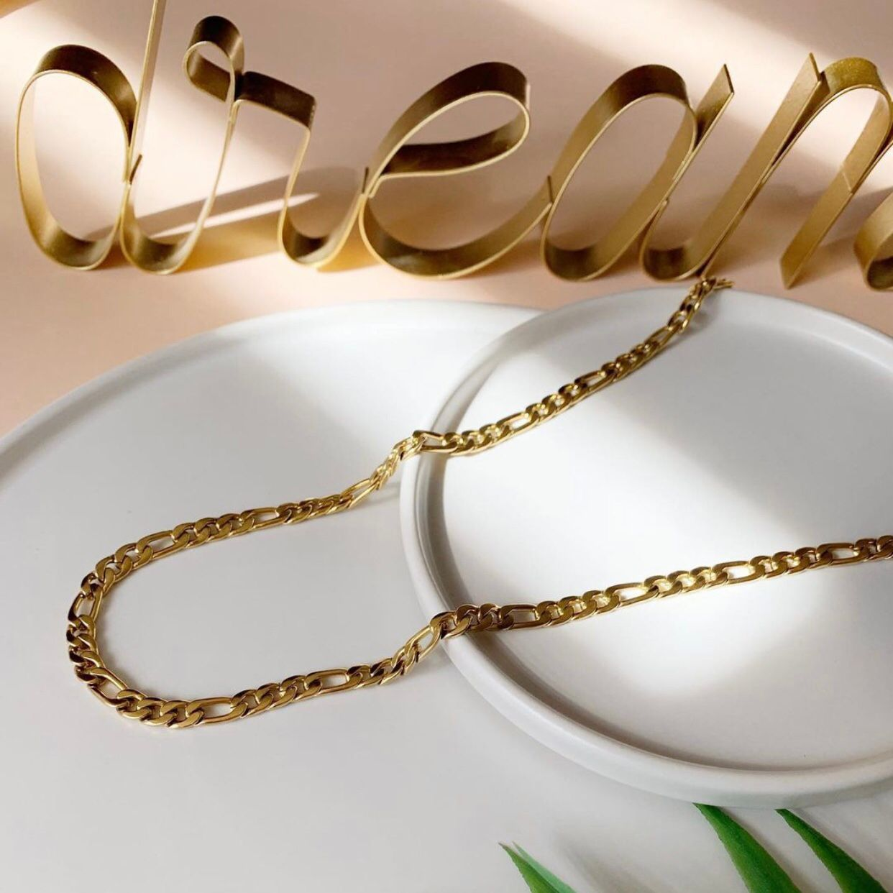
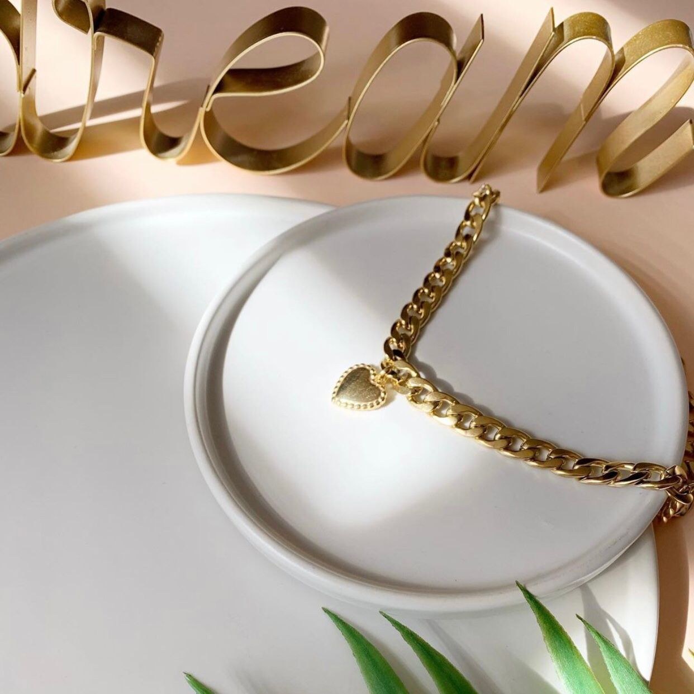
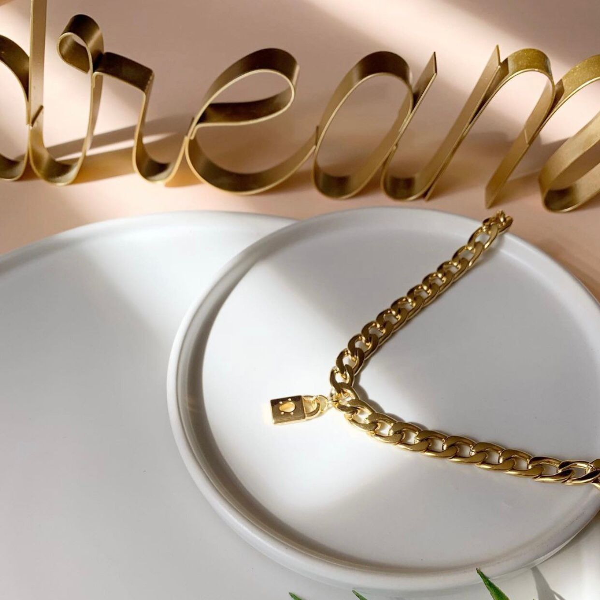
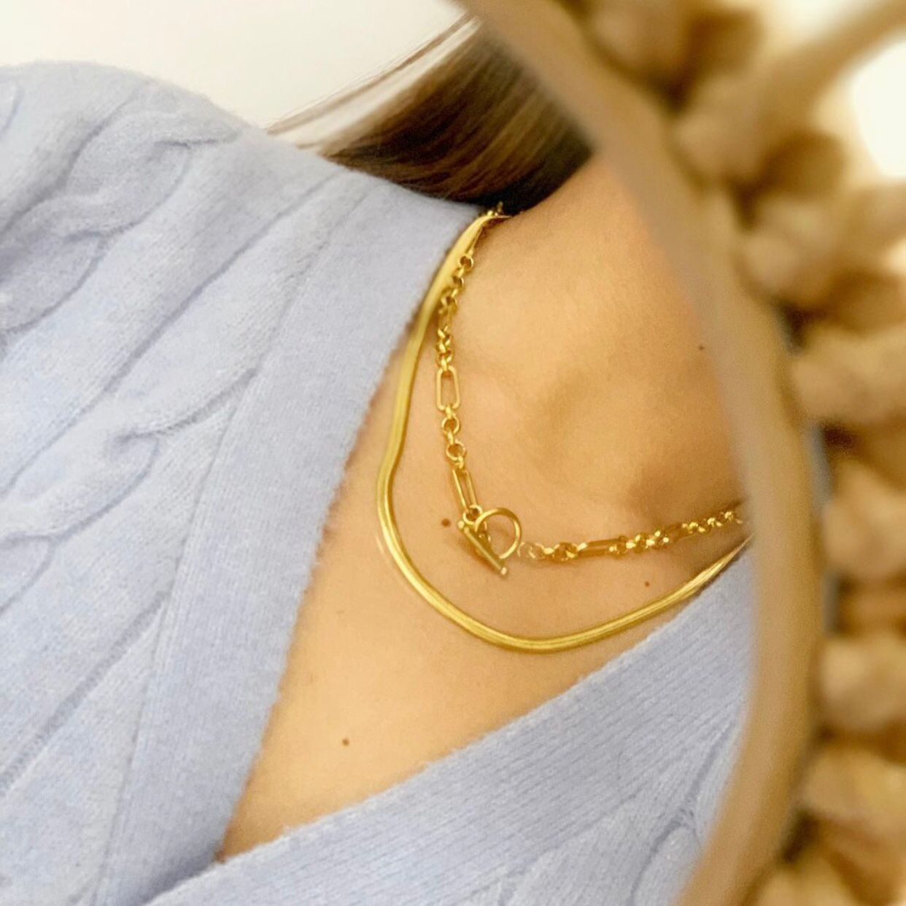
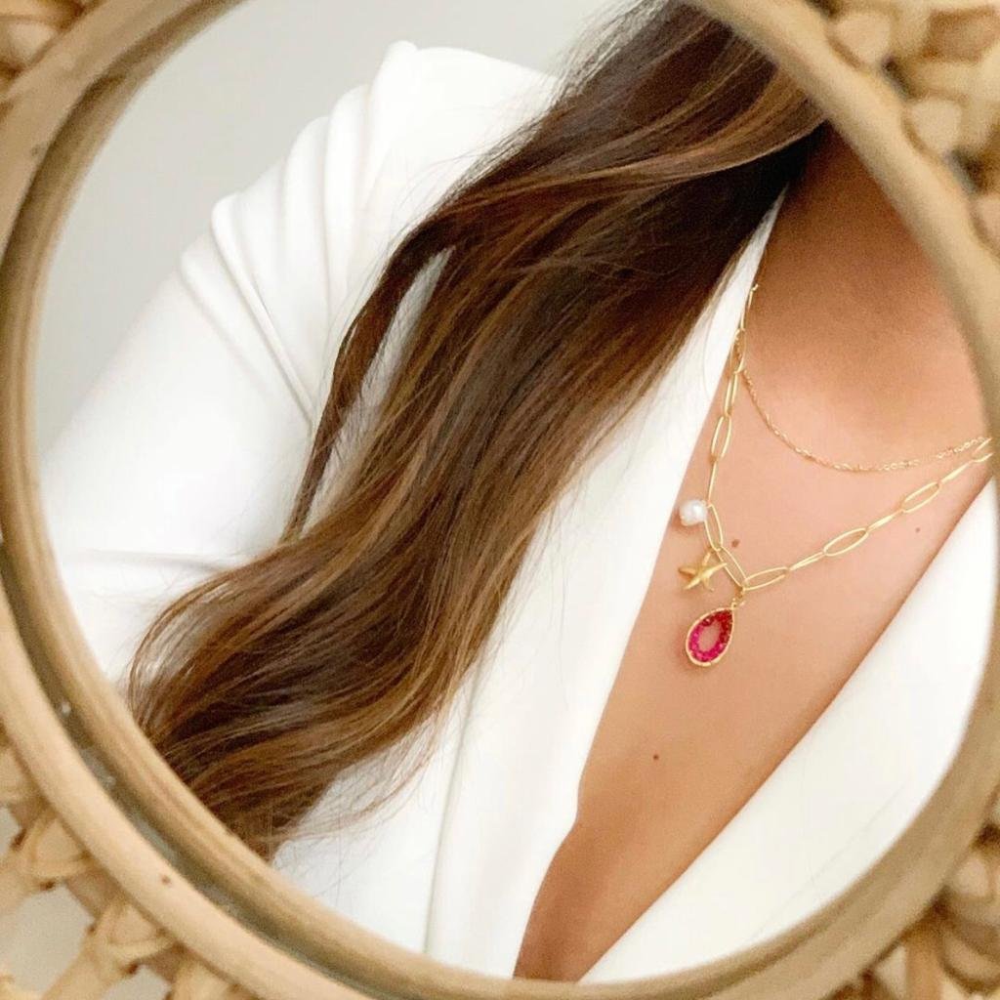

M O O N J O Y E R í A
INICIO |
M O O N J O Y E R í A
| Conoce más sobre nosotros |
| Moon Joyería es una tienda creada a partir del sueño de dos jóvenes amigas, persiguiendo el objetivo de querer poner al alcance de cada mujer y hombre accesorios que serán parte de su belleza y esencia natural, ya sea por medio de un collar con cristales hermosos, un anillo símbolo del amor eterno, o un brazalete; todas y cada una de nuestras piezas están diseñadas para portarlas de por vida. Accesorios 100% mexicanos y fabricados artesanalmente, que le darán un toque más de brillo a tu estilo. |
|  |  |  |
|  | Misión: Nuestra misión en Moon Joyería es aportar brillo a la vida diaria de las personas a través de ese toque de glamour y estilo, que genera deleite, sorpresa, y que hace del día a día algo extraordinario. |
| Visión: Ser la joyería mexicana con mayor reconocimiento a nivel tanto nacional como internacional, por sus valores y esencia como empresa |  |